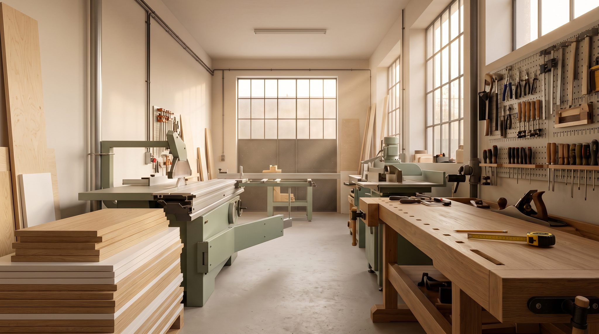
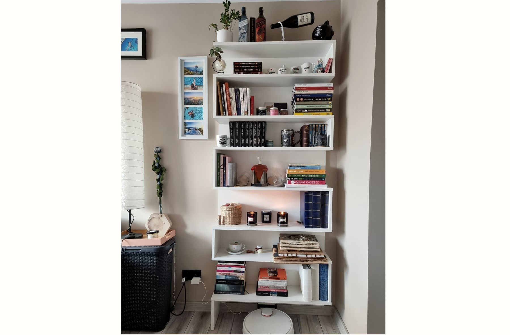

Szafy z drzwiami przesuwnymi
Od wnęki w przedpokoju po całą ścianę pod skosem. Drzwi z lustrem, lakobelem albo płytą, także łączone pasami.
Systemy Laguna, Bimak, Indeco, Bonari

Przewiń, żeby otworzyć szafę
Każdy mebel powstaje u nas, od pierwszej płyty do ostatniego zawiasu.
Mierzymy, projektujemy, produkujemy i montujemy sami. Pomiar i projekt są bezpłatne, a na wszystko dajemy 36 miesięcy gwarancji.
Wszystko na tych zdjęciach zmierzyliśmy, zrobiliśmy i zamontowaliśmy sami.


Więcej na Facebooku i w wizytówce Google.
Najwięcej robimy szaf i garderób. Kuchnie i pozostałe meble projektujemy tak samo: od pomiaru, pod konkretne miejsce.
Od wnęki w przedpokoju po całą ścianę pod skosem. Drzwi z lustrem, lakobelem albo płytą, także łączone pasami.
Systemy Laguna, Bimak, Indeco, Bonari

Tradycyjne otwieranie z nowoczesnym frontem: frezowany uchwyt, lakier, dąb. Dobrze znoszą skosy i nietypowe wnęki.
Zawiasy i prowadnice Blum, GTV

Wnętrze rozplanowane pod to, co naprawdę w niej trzymasz: drążki, szuflady, półki na buty, miejsce na walizki.
Szuflady z cichym domykiem Blum, Häfele, Sevroll
Zabudowy pod sufit, wyspy, aneksy w kawalerce. Płyty, blaty i uchwyty dobieramy razem z Tobą.
Płyty i blaty Kronospan, okucia Blum

Regały na książki, ściany RTV, szafki łazienkowe, meble do biur i instytucji.
Płyty laminowane, fronty lakierowane, szkło i lustra z folią
Ze 133 opinii. Kilka z nich poniżej, słowo w słowo, a resztę przeczytasz w wizytówce Google.
„Zamówiłem szafę do zabudowy wnęki przedpokoju i muszę przyznać że jakość wykonania i użytych materiałów przerosła moje oczekiwania.”
„Garderoba walk-in - świetna robota! (…) Garderoba wykonana w terminie, bez żadnych usterek, czyściutko łącznie z … końcowym odkurzaniem podłóg”
„zamówiona przez nas kuchnia została wykonana przepięknie każdy centymetr idealnie wymierzony pasujący do siebie. To samo dotyczy dotrzymania terminu montażu.”
„Firma wykonała dla mnie szafę będącą przedłużeniem istniejącej zabudowy, szafę wolnostojącą oraz biurko z nadbudówką. Każdy element został perfekcyjnie dopasowany i wykonany z ogromną starannością.”
„Od pomiarów przez informacje o postępie w produkcji do samego montażu. Szybko, sprawnie, czysto i w pełni profesjonalnie. Tak to powinno wyglądać w każdej firmie.”
„wykorzystali całą przestrzeń szafki optymalnie jeśli chodzi o dodatkowe półki. To kawał dobrej roboty zważywszy, że ściany w łazience są bardzo krzywe.”
Od telefonu do montażu. Za pomiar i projekt nie płacisz.
Umawiamy termin, przyjeżdżamy i mierzymy pomieszczenie. Pomiar jest bezpłatny i do niczego nie zobowiązuje.
Mówisz, czego potrzebujesz. To Ty jesteś pierwszym projektantem, my podpowiadamy materiały i rozwiązania. Potem podajemy cenę i termin.
Meble powstają u nas, z płyt i okuć, które razem wybraliśmy. W trakcie możesz zapytać, na jakim etapie jest Twoje zamówienie.
Przywozimy meble i wnosimy je na każde piętro.
W umówionym dniu. Szafę czy zabudowę przedpokoju zwykle składamy w kilka godzin, a po montażu sprzątamy.
36 miesięcy gwarancji na wszystko. Po jej zakończeniu nadal pomagamy i serwisujemy.
Robimy meble od 1980 roku. Umiejętności przechodzą u nas z pokolenia na pokolenie, a pod każdym meblem podpisujemy się nazwiskiem.
Zespół to stolarze-montażyści: Piotr, Paweł i Józef. Mierzymy, budujemy i montujemy sami, więc ten, kto obiecuje termin, sam go potem dotrzymuje. Pracujemy na płytach Kronospan, okuciach Blum, Häfele i Sevroll oraz systemach drzwi Laguna, Bimak, Indeco i Bonari.
Robiliśmy też meble dla Politechnika Śląska · KOMAG · PRUiM Gliwice · NOVAR · ZKS · Klub Malucha Kropka


Nic. Przyjazd, pomiar i projekt są w cenie mebli, a pomiar do niczego nie zobowiązuje. Jeśli wycena Ci nie odpowiada, nie płacisz za wizytę.
Termin podajemy razem z wyceną. Zależy od rodzaju mebli i liczby zamówień w danym momencie. Wolimy powiedzieć uczciwie, ile to potrwa, niż obiecać termin, którego nie dotrzymamy.
Zwykle jeden dzień, a szafę czy zabudowę przedpokoju składamy w kilka godzin. Po montażu sprzątamy i odkurzamy.
Płyty i blaty Kronospan, okucia i szuflady z cichym domykiem Blum, Häfele i Sevroll, systemy drzwi przesuwnych Laguna, Bimak, Indeco i Bonari, szkło i lustra z folią zabezpieczającą.
Tak. Transport obejmuje wniesienie na każde piętro.
36 miesięcy na wszystko, co zrobimy. Po tym czasie nadal serwisujemy i pomagamy.
Pracownia jest w Gliwicach-Łabędach. Jeździmy po Gliwicach, Zabrzu i okolicy; o dalszy dojazd zapytaj przez telefon.
Tak. Robiliśmy meble m.in. dla Politechniki Śląskiej, KOMAG-u, PRUiM Gliwice, NOVAR-u, ZKS i Klubu Malucha Kropka.
ul. Staromiejska 15, 44-109 Gliwice (Łabędy) · pon.–pt. 8:00–16:00
mebleswierkosz@gmail.com